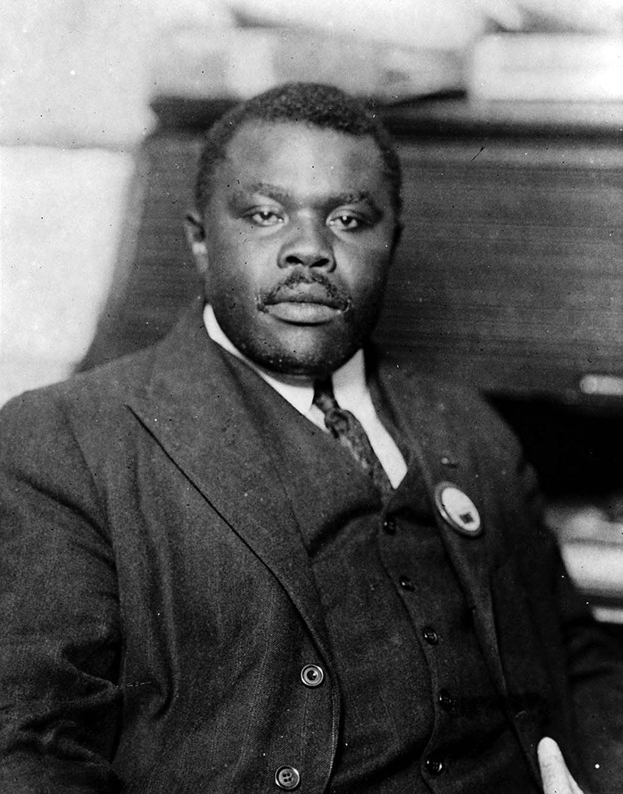

Marcus Garvey
A Jamaican political activist, publisher, journalist, entrepreneur, and orator.

Marcus Garvey and the Universal Negro Improvement Association form a critical link in black America's centuries-long struggle for freedom, justice, and equality.
As the leader of the largest organized mass movement in black history and progenitor of the modern "black is beautiful" ideal, Garvey is now best remembered as a champion of the back-to-Africa movement.
In his own time he was hailed as a redeemer, a "Black Moses." Though he failed to realize all his objectives, his movement still represents a liberation from the psychological bondage of racial inferiority.
Some facts about him:
- He was born in Jamaica in 1887
- He fought to unified Africa
- The first UNIA division was formed in New York in May 1917. Within a month, the organisation had 2 million members all over the United States. By 1920, the U.N.I.A. had 1,100 chapters in 40 countries around the world such as UK, Cuba, Panama, Costa Rica, Ghana. By 1926,
the membership of the U.N.I.A. had grown to over 11 million members. Marcus Garvey built the largest Black organization in history.
- Garvey had a stroke in January 1940 which left him partially paralyzed. In May 1940, George Padmore wrote an article stating that Garvey had died which upset Garvey and he suffered a second fatal stroke or heart attack.
- He was married twice in his life time
- Died in London, England in 1940